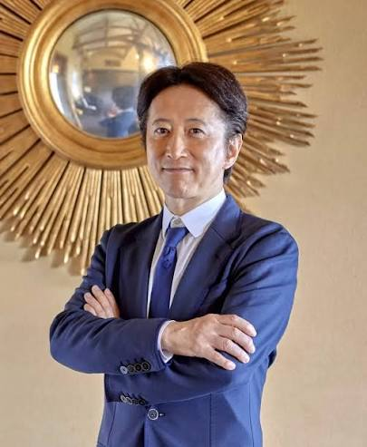

Hirohiko Araki es un mangaka (dibujante y escritor de manga) japonés, nacido el 7 de junio de 1960 en Sendai, Japón. Es mundialmente conocido por ser el creador de JoJo's Bizarre Adventure, una de las obras más reconocidas del manga.
Desde pequeño, Araki mostró interés por el dibujo y los mangas. Durante su infancia pasaba mucho tiempo leyendo historietas y observando libros de arte de su padre, que influyeron en su futuro estilo artístico.
En 1980 comenzó su carrera profesional con Poker Under Arms, una historia corta que obtuvo reconocimiento en el Premio Tezuka. Posteriormente publicó otras obras, como Cool Shock B.T., Baoh y The Gorgeous Irene.
En 1987 comenzó a publicar su obra más famosa, JoJo's Bizarre Adventure, que narra las aventuras de distintas generaciones de la familia Joestar. A lo largo de sus diferentes partes, Araki desarrolló un estilo artístico muy particular, caracterizado por sus personajes extravagantes, poses llamativas, vestimentas originales y referencias a la música y la moda.
Además de su trabajo en el manga, colaboró con importantes marcas como Gucci y participó en proyectos artísticos relacionados con el Museo del Louvre, en Francia.
Actualmente, Hirohiko Araki es considerado uno de los mangakas más influyentes de Japón. Su creatividad y su capacidad para reinventar constantemente su estilo artístico hicieron que JoJo's Bizarre Adventure se convirtiera en una obra reconocida internacionalmente.